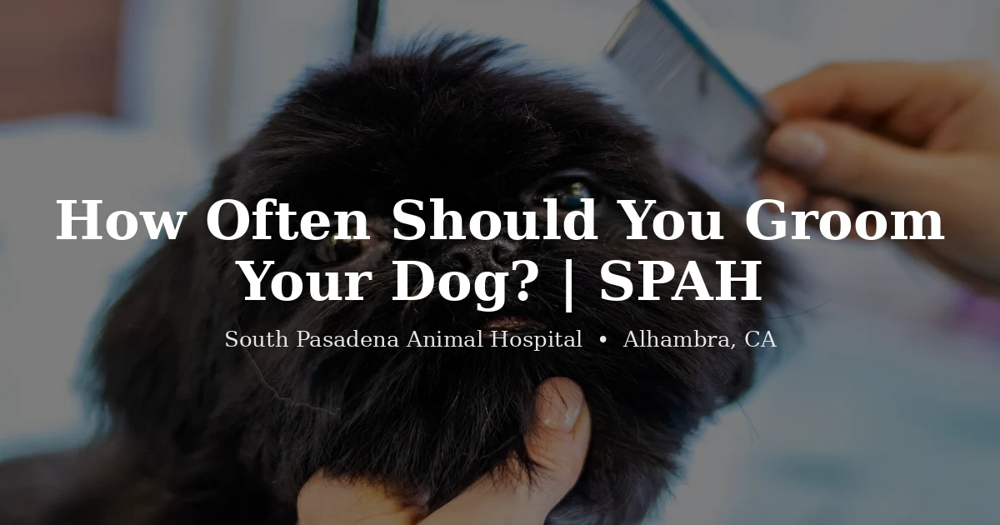

How Often Should You Groom Your Dog?

A client asked us last week how often she should be bathing her golden retriever. She had been doing it every weekend with a nice-smelling shampoo, because he runs around the park and comes home dirty. His skin was flaky and he had started scratching at it. We told her to stop. Bathing a healthy dog every week washes away the oils that keep the skin and coat comfortable, and for a lot of dogs that causes more trouble than the dirt ever did. So the first thing to say about grooming frequency is that more is not better.
"How often should I groom my dog" is one of the questions we field most, and there is no single number that answers it. The honest answer is that it depends on the coat your dog is walking around in. A beagle and a doodle live on completely different schedules.
Start with the coat, not the calendar
Before you pick a number, figure out which group your dog falls into. That one fact drives almost everything.
Short, smooth coats like beagles, Labs, and boxers are the low-maintenance end. A bath every one to three months is plenty, a weekly brush with a rubber curry keeps shedding down, and nails need attention about once a month. These dogs rarely need a professional haircut at all.
Double coats like huskies, golden retrievers, and shepherds have a soft undercoat under a coarser top coat. They blow that undercoat out heavily twice a year, usually spring and fall, and that is when a deshedding bath and blowout earns its keep. Outside of those stretches, every couple of months works. One thing we feel strongly about: do not shave a double coat to keep the dog cool. It does not work the way people think, and it can leave the skin exposed to sunburn.
Curly and wavy coats like poodles and doodles are the opposite of low-maintenance. The hair keeps growing instead of shedding out, so it tangles against itself and mats if it is left alone. Most of these dogs need a full groom every four to six weeks, with real brushing at home in between.
Long silky coats like Shih Tzus, Yorkies, and Maltese tangle easily and usually get groomed every four to six weeks, often with the face and feet tidied more often than the body.
The doodle problem, specifically
If there is one dog we see matted more than any other, it is the doodle. Owners are told the coat is low-shedding, which is true, and they hear that as low-maintenance, which is not. A doodle coat that is brushed only on top looks fine for a few weeks and then suddenly is not, because the mats form down at the skin where the brush never reached.
Here is the test we give doodle owners. Push a metal comb all the way to the skin and draw it through. If it glides, you are brushing deep enough. If it catches a half inch above the skin, a mat is already forming and it is time to book. For most doodles in a full coat, six weeks is about the limit before a routine haircut turns into a dematting, and dematting is slow, uncomfortable work for the dog. Staying on schedule is kinder and it is cheaper. We walk through what that costs in how much dog grooming costs in Alhambra.
The parts people forget: nails and ears
Grooming is not only the bath and the haircut. Nails need a trim every three to four weeks on most dogs no matter what the coat is doing. The quick giveaway is sound. If you hear clicking when your dog crosses a hard floor, the nails are too long, and overgrown nails change how a dog stands and can make older dogs sore. Dogs that mostly walk on grass and dirt wear them down less than you would expect and often need trims more often, not less.
Floppy-eared and curly-coated dogs also grow hair in the ear canal and trap moisture, so ear cleaning belongs in the routine too. If your dog is shaking its head or the ears smell, that is worth a look rather than just a clean.
You can groom too often, too
We spend as much time telling owners to ease off as we do telling them to come in more. Over-bathing is real, and it is one of the more common reasons we see a dry, itchy dog with no fleas and no allergies behind it. Brushing, on the other hand, you almost cannot overdo. It spreads the natural oils, pulls out loose hair, and catches tangles while they are small. If you want one habit to build, make it brushing between visits, not bathing.
A couple of things specific to living here
Grooming schedules in the San Gabriel Valley have a local wrinkle or two. The big one is foxtails. From late spring through summer the dry grass along our trails and canyons dries into barbed seeds that burrow into coats, between toes, and into ears, and they do not work their way back out on their own. A thorough groom, or at least a careful comb-through, is often how they get found before they cause a problem. If you hike the foothills or let your dog into tall dry grass, check and comb after.
Our summers also tempt people to shave everything down. For short and double coats, leave the coat alone and manage heat with shade, water, and timing walks for the cooler hours instead.
When a groom and a vet belong in the same trip
Our groomer works in the same building as our veterinarians, which changes what a grooming visit can catch. A mat hides the skin underneath it, and when it comes off we sometimes find irritation, a hot spot, or a lump that the owner could not feel through the coat. Because a vet is down the hall, that gets looked at the same day instead of becoming a second appointment. For senior dogs, anxious dogs, and dogs managing a health condition, that setup is the whole point. You can see services and pricing on our grooming page.
So there is no universal answer, but there is a simple way to land on yours: name your dog's coat, match it to the ranges above, and let how fast the coat tangles fine-tune the rest. When you are not sure, call us at (626) 441-1314 and we will tell you honestly what your dog actually needs.